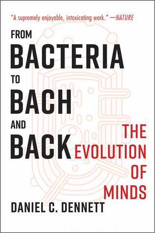

From Bacteria to Bach and Back: The Evolution of Minds
Reseña por Jorge I. Zuluaga

Ver reseña en GoodReads (necesita cuenta)
Un verdadero tour de force intelectual para desentrañar los secretos de la evolución de la cultura y la naturaleza de la consciencia. Bueno, o por lo menos para entender las conclusiones a las que ha llegado su autor, el reconocido filósofo norteamericano Daniel Dennett, en cuenta años de investigación filosófica y, por qué no –aunque el no lo afirma– de investigación científica propia.
Lo primero que debo decir es que es un libro más difícil de leer de lo que parece, o por lo menos de lo que se lee en reseñas o en las frases cortas que acompañan la portada.
Dudaría en llamarlo un libro divulgativo. Aunque tampoco podríamos clasificarlo como un libro académico.
El libro está atravesado de citas bibliográficas a centenares de trabajos científicos relacionados –aunque hay que decir que Denett no abusa de las referencias como sería el caso de tratarse de un texto académico–.
Esto, por un lado –el lado positivo– evidencia lo mucho que estos temas se han discutido en la historia y siguen discutiéndose en el presente; pero por otro lado –el lado negativo– pone en evidencia la multiplicidad de aproximaciones al problema que han existido. Esta multiplicidad que te hace “dudar”, desde la primera página y por el tono en el que el autor anticipa lo que será su contenido, de si lo presentado en el libro en realidad te brindará una visión objetiva del estado del problema o solo una apreciación de las posiciones particulares de Dennett.
Pero ¿que tan negativo puede ser eso? ¿acaso no estamos hablando de dos de los más grandes problemas científicos de la historia, el del origen de la cultura y la naturaleza de la consciencia, de modo que esperar encontra “La Solución explicada en 400 páginas” no es realmente muy ingenuo?.
Sí y no.
Normalmente cuando se aborda un libro de divulgación científica o filosófica, se espera encontrar algo así como el estado actual en la investigación en la materia. Una suma de lo que muchas personas han enseñado sobre el problema a lo largo de siglos.
No es este el caso, me parece a mi, de este libro. Aunque no se puede decir que Denett no presente aquí el producto de la investigación de muchos de los y las autoras que cita, su estilo lo induce a uno a pensar que mucho de lo que elabora es propio.
Leí el libro en su edición en inglés, la lengua en la que fue originalmente escrito. Si bien soy científico y estoy bastante acostumbrado a la literatura en esta lengua –leo y escribo en inglés textos académicos– la verdad no soy bilingüe y me vi muchas veces a gatas para comprender pasajes enteros, unas veces debido al vocabulario –que es bastante rico en realidad y del que aprendí mucho– y otras por la presencia de expresiones “idiomáticas” que creo yo se entienden a cabalidad cuando eres un lector o lectora nativa.
Si no lo son y les interesa el libro, de verdad, busquen la edición en castellano. No vale la pena perderse un solo párrafo del increíble recuento de Denett.
Con este libro rompí una regla que tengo en GoodReads: no leer reseñas antes de leer un nuevo libro.
Es paradójico porque se supone que las reseñas ayudan a saber si se debe leer un libro. Creo que algunas personas aquí incluso leerán esta reseña antes de meterse con este texto.
Lo que yo quiero evitar es que las reseñas me sesguen, que no pueda hacerme un juicio independiente. Pero tal vez es una actitud neurótica de mi parte.
Como digo, viole mi regla y me lance a leer un par de párrafos de algunas reseñas, la mayoría de ellas con bajas calificaciones.
En todas vi que se repetía el mismo argumento contra la obra: “a este libro le sobran palabras”.
Una de ellas incluso llegaba a decir que que es como si a Dennett le hubieran pagado por cada palabra escrita.
Después de leer el libro reconocí que algo de verdad había en la observación aunque ciertamente ahora no creo que ese exceso sea un error. Es cierto que Dennett repite sistemáticamente los mismos argumentos, pero eso no hace el libro aburrido; al contrario, lo hace mucho mas claro, algo de lo que carecen libros en la materia mucho mas compactos pero también más impenetrables.
El l libro ha cambiado mi apreciación de una buena cantidad de asuntos en los que me creía medianamente bien informado. En esto hay que decir que Dennett es muy bueno: sabe convencer a una audiencia ilustrada con argumentos entre eruditos y aparentemente obvios.
Su idea de la “competencia sin comprensión” que caracteriza a la evolución biológica, pero también a la evolución inicial del lenguaje, tanto durante la infancia como de la totalidad de la historia, y que es el centro de toda su argumentación en el texto –idea que obviamente no es enteramente suya dado que como aclara explícita o implícitamente, su trabajo se basa consciente o inconscientemente en el trabajo de decenas de filósofos y científicos previos– es sencillamente reveladora. O por lo menos lo fue para mi.
Los humanos, con nuestro lenguaje y cultura altamente refinada por la combinación de evolución “ciega” en un principio, y diseño inteligente con posterioridad , nos pasamos la vida haciendo “ingeniería” inversa sobre todas las cosas que ha diseñado la evolución.
A la trompa del elefante le asociamos una razón de ser , permitir a estos animales obtener agua o manipular objetos, pero esa razón, como explica Dennett aquí, esa no existe en el proceso evolutivo mismo del elefante, es una free-floating reason. La evolución es, para usar un término acuñado por Richard Dawkins, a quien cita repetidas veces, una “relojera ciega”. Esa razón en las cosas que diseña la evolución solo puede ser identificada, comprendida a posteriori, por organismos capaces de pensar en ella, que en la Tierra somos los humanos.
La exposición en este libro de la “memética”, la “teoría” –me atrevo a llamarla así aunque Dennett nunca lo haya hecho y muchos autores y autoras no le dan todavía mucho crédito– que, en analogía a la genética, explica la dinámica y la evolución de los “memes”, es decir, de elementos informáticos que codifican el know-how cultural en los humanos, es sencillamente reveladora.
No había leído mucho al respecto pero me atrevería a decir que la presentación y aplicación que hace el autor aquí –junto su defensa de la teoría– debe estar entre las mejores que se han escrito; incluso por encima de la del autor del concepto, el mismo Richard Dawkins.
A pesar de mis ya mencionadas limitaciones con el inglés, el libro está increíblemente bien escrito. Combina un lenguaje espontáneo, con acotaciones irónicas y a veces hasta humorísticas, que se mezclan con eruditas elaboraciones filosóficas. ¡Es una verdadera delicia!
Aunque no soy un experto en el tema de la evolución del lenguaje y de la cultura, debo decir que la exposición que hace Dennett del proceso, usando para ello un esquema de “arriba a abajo” (bottom-up) es sencillamente alucinante.
El lenguaje y la cultura humana, como expone ampliamente el autor, pudo comenzar en un proceso de evolución darwiniana “ciega”, un proceso que no involucró a los genes –los cambios genéticos y fenotípicos llegaron después– sino a los memes, protopalabras, tokens mentales. Este proceso inicial, que implicó poco o ninguna comprensión entre los primeros Homo sapiens, fue seguido posteriormente por un “contagio” progresivo –o tal vez explosivo– y finalizó en el surgimiento de un lenguaje lleno de comprensión, de sentido y en suma de consciencia, un producto “acabado”, posiblemente el producto más exquisito de la evolución biológica en la Tierra, del que parece haber solo evidencia desde hace un par de decenas de miles de años.
No se si esta idea soportará pruebas rigurosas y terminará por imponerse, pero me encanta porque no implica ningún “milagro”, ninguna mutación repentina que siguió a un súbito alumbramiento de nuestra especie privilegiada.
Ese es justamente un tema que abunda en las páginas de “From bacteria to Bach and back”.
Dennett se mueve entre una postura que busca eliminar cualquier factor “misterioso” o serendipico que convirtió a una sola especie de hominino y no a ninguna otra en aquello que somos.
Al mismo tiempo, insiste en probar que solo la especie humana está dotada de verdadera comprensión, y en últimas, de consciencia, una posición que lo aleja de muchos etólogos, incluso de neurocientíficos que hoy le reconocen a muchos animales una vida interior mucho más rica e incluso la consciencia de la que pensamos solo gozamos nosotros.
Pero los argumentos de Dennett no son banales, ni surgen simplemente de una obsesión, como humanista que es, por la singularidad humana.
Tampoco se si su postura en este tema se sostendrá, pero sus argumentos son muy convincentes y, como la buena ciencia, realmente sencillos y generales.
Me quede con las ganas de que Dennett se explayara mucho más explicando su visión sobre la consciencia. Creo que le dedicó muy poco espacio a un tema tan trascendental y del que prometió hablar en todos los capítulos del libro. Tal vez sea porque ya lo había hecho en extenso en su libro “Consciousness explained” que ahora me tocará conseguir.
En fin.
Si me preguntan entonces si vale la pena leer este libro mi respuesta no puede ser otra: ¡por supuesto qué hay que leerlo! Pero háganlo en un idioma que comprendan a cabalidad.